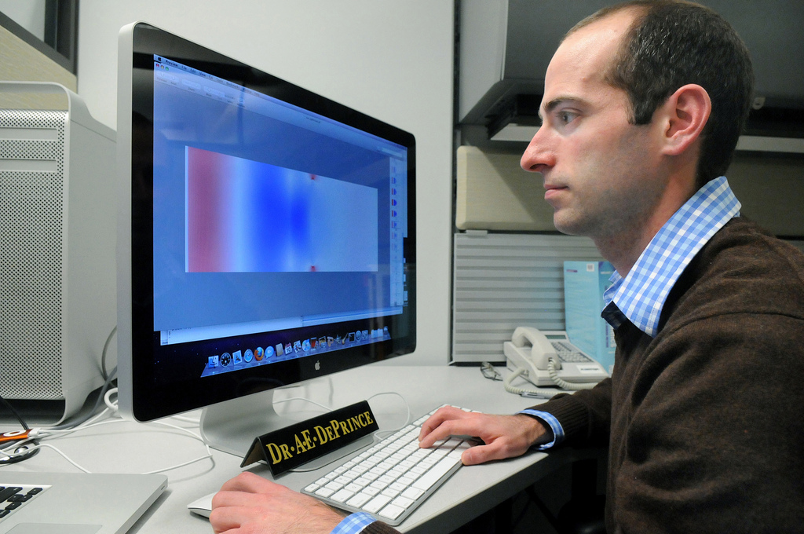
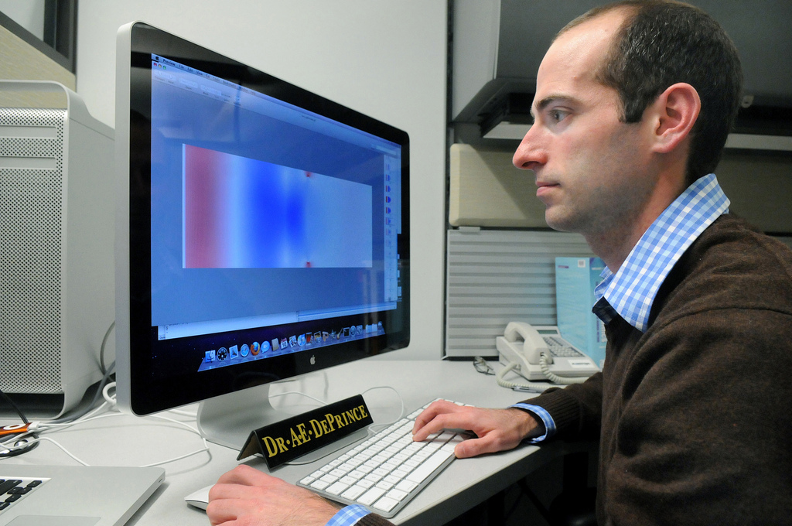

Computer and Information Research Scientists |
||||||||||||||||
|
Network and Computer Systems Administrators
|

 

|
Computer and information research scientists invent and design new approaches to computing technology and find innovative uses for existing technology. They study and solve complex problems in computing for business, medicine, science, and other fields.
| ||||||||||||||